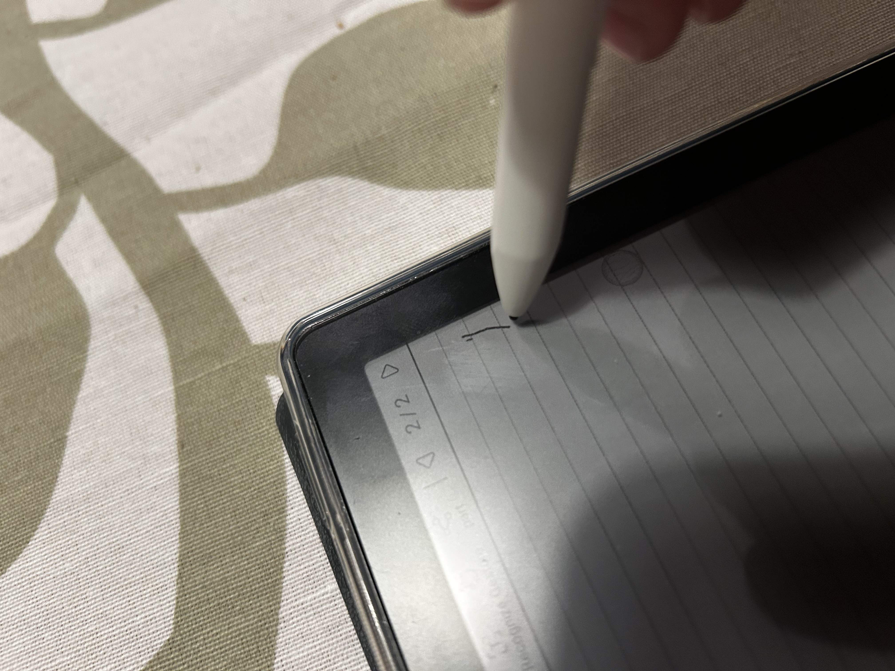

Réponses aux questions sur la Meebook M8C :
Table des matières :
Notes :
Annotation de PDF :
Fonctionne bien.
Dessin :
L'application de dessin offre :
Le stylet dessine n'a pas de latence, a un léger décalage par rapport à sa position sur les bords de l'écran...
...mais il est précis au centre 👍

Lecture :
Manga
Cette liseuse est faite pour la lecture de manga ! 7,8" est vraiment LA taille parfaite à mon goût 😍, pas besoin de zommer ce qui est très pratique.
BD
Pour certaines BD comme Garfield ou Game Over la taile d'écran est bonne, et pour des BD où le texte est écris trop petit j'utilise Seeneva qui a un Bubble Zoom 😊.
Roman
Très bien, je peux utiliser ma manette de jeu pour tourner les pages sur Moon+ Reader* (ce qui me permet de ne pas avoir à sortir mon bras lorsque je suis sous ma couette 😅). Seul point négatif : l'écran est un peu plus sombre que ma Kobo Clara HD (le défaut de la technologie Kaleido 3) mais c'est acceptable.
*en choisissant l'action des touches dans les options de contrôle